2012年公開の映画『プロメテウス』の続編であり、1979年公開の『エイリアン』の前日談として製作されたシリーズの2作目である。アメリカでは2017年5月19日、日本では9月15日より公開された[4]。アメリカでのキャッチコピーは「The path to paradise begins in hell. （天国への道は地獄から始まる。）」、日本でのキャッチコピーは「絶望の、産声。」
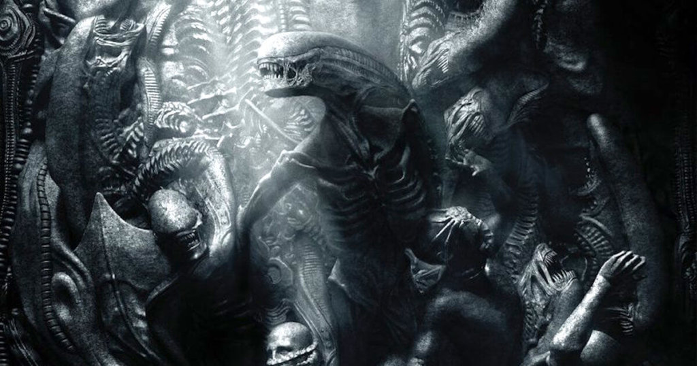
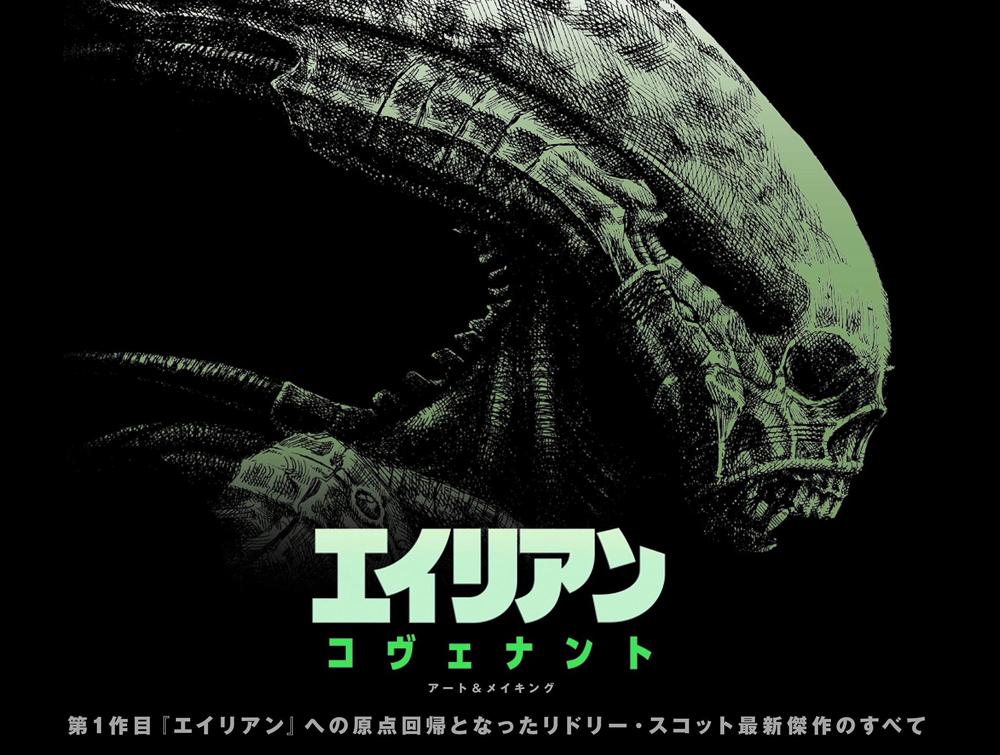
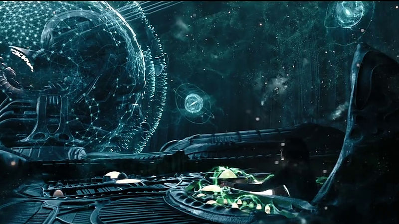
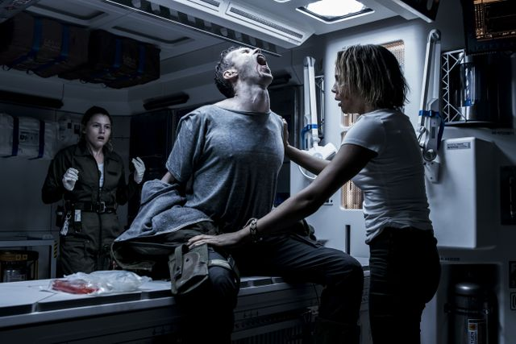
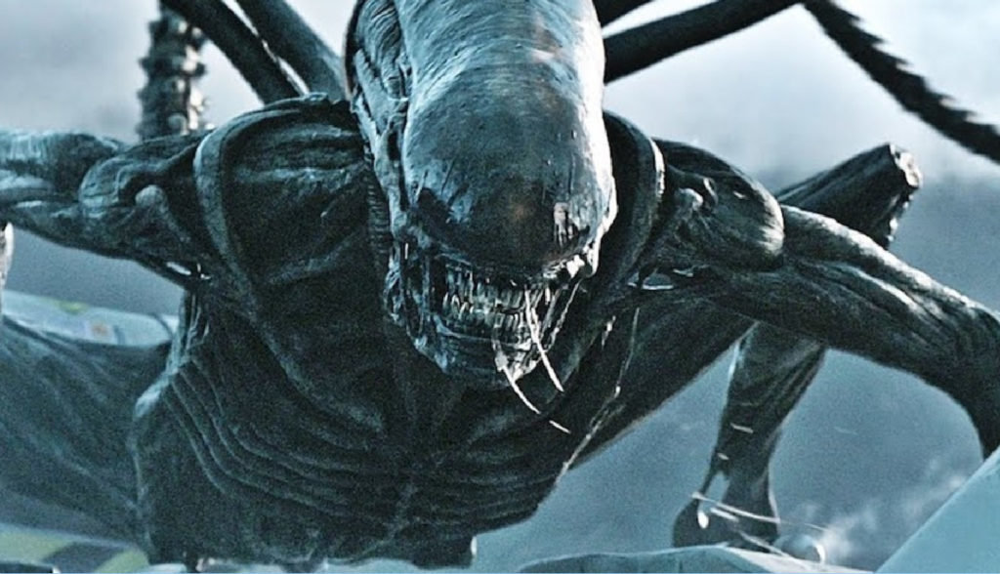
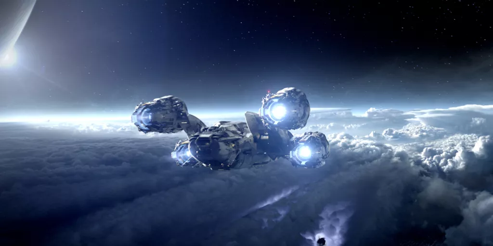
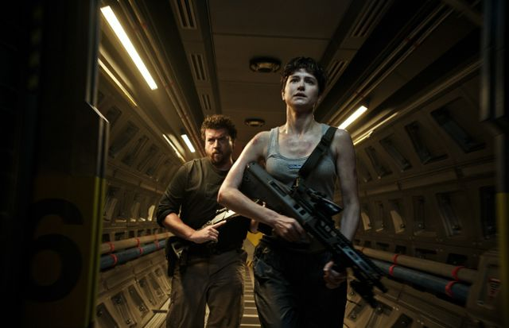
プロメテウス号の出発前、1体の男性型アンドロイドが起動。そして創造者・ウェイランドと出会って互いの出生について質問し、ミケランジェロの彫刻を見て、自身を（ダビデ＝）デヴィッドと名付ける。
2104年、植民船コヴェナント号は、船を管理するアンドロイドのウォルター、冷凍休眠中の乗組員15人と2千人の入植者、1千体以上の人間の胎芽を乗せ、惑星「オリガエ6」に向けて航行中、突如発生したニュートリノの衝撃波を受け、甚大なトラブルに見舞われる。
乗員は次々に目覚めるが、船長のブランソンがカプセル内で発生した火災で死亡、彼の妻で人類移住計画責任者のダニエルズは悲嘆に暮れる。副船長のオラムが船長となり船の復旧作業に勤める中、船外修理中のテネシーが謎の信号を受信する。解析の結果、その歌のような信号の発信源はオリガエ6より遥かに近く、移民に好条件と思われる惑星と判明する。オラム船長は先のトラブルの事もあり、この惑星の調査を決定。ダニエルズは、不確実な可能性より元の計画を遂行すべきだと主張するが、彼はそれを押し切って調査隊を編成する。
オラム、ダニエルズ、ウォルター、生物学者カリン、科学者ファリス、護衛隊員のロープ、コール、ハレット、レドワード、ローゼンタール、アンカーの計11名の調査隊が惑星に降下。信号発信源である朽ちた異星の宇宙船を発見する。そこでダニエルズは「E・ショウ」と名前が書かれたドッグタグと写真を発見する。その写真に写っていたのは、11年前に消息を絶ったプロメテウス号の乗員エリザベス・ショウ博士だった。
別行動で生物学調査を行うカリンに同行したレドワードの耳の中に、謎の黒い胞子が潜り込む。レドワードは次第に体調を崩して苦しみ始め、カリンは介抱のために着陸船に引き返し始める。その頃、宇宙船内部を探索中のハレットの鼻孔にも、同じ胞子が侵入していた。
着陸船に戻ったカリンは悶え苦しむレドワードの背中の皮膚の下で何かが蠢いているのを見て未知の感染症だと慄く。ファリスはレドワードと彼の吐血を浴びたカリンの2人を医療室に閉じ込める。カリンは医療室から出すよう助けを求めるが、その後ろでレドワードの背中を突き破って未知の異生物"ネオモーフ"が現れ彼は絶命する。ネオモーフはすぐカリンに襲いかかり、続いてドアのガラスを破り医療室から飛び出してファリスにも迫る。ファリスはショットガンで必死に応戦するが、可燃物タンクを誤射してしまう。
ファリスの連絡でダニエルズらも着陸船に向かうが、目前で着陸船は爆発しファリスが絶命。ハレットも苦しみ始め、口から2体目のネオモーフが出現。事切れたハレットを後に走り去った。調査隊はコヴェナント号との通信を試みるが、発生した磁気嵐の影響で失敗。再びネオモーフが出現し、ダニエルズを庇ったウォルターの左手首を食いちぎり、アンカーを殺害する。銃の一斉射撃でこれを倒すも、もう1体のネオモーフがローゼンタールに襲いかかる。その時、何者かが閃光弾を打ち上げ、ネオモーフは退却する。
彼らを助けたのは、ウォルターと同じ容姿を持つアンドロイド、プロメテウス号に随行していたデヴィッドであった。デヴィッドは生き残ったダニエルズ、オラム、ウォルター、ロープ、コール、ローゼンタールを連れて夥しい数の異星人の黒い死体が散乱する広場を抜け、自身の研究施設に案内する。彼はこの惑星に来たいきさつや、ショウ博士が到着時に事故死したこと、異星人たちも破損した宇宙船から漏れ出た毒物によって全滅したこと、自分は人類の限界と新たな生命の研究を続けていた旨を話し、同じアンドロイドのウォルターには「兄弟」として親密に接する。一行は救助が来るまでの間、ここに身を潜めることとなった。一方、コヴェナント号のテネシー、アップワース、リックスの3人は、船体の強度限界で低軌道に降下できず、通信回復できずにいた。
水場に行ったローゼンタールが戻らないことを不審に思い探しに行ったオラムは、彼女の無残な死体と、ネオモーフと心を通わせようとするデヴィッドを目の当たりにする。全て罠だったと察したオラムは銃でネオモーフを射殺し、激昂するデヴィッドにも銃口を向け真実を話すよう詰め寄る。デヴィッドはそれに応じ、研究の過程を見せていく。そしてデヴィッドが最終成果と評して見せたのは、無数の卵（エイリアン・エッグ）であった。安全だと促されるまま卵を覗き込んだオラムは、飛び出したフェイスハガーに張り付かれてしまう。そして彼の胸を突き破ってプロトモーフが誕生する。デヴィッドは恐るべき計画を抱いていた。
11年前、異星人（エンジニア）の宇宙船でこの星へ到着したデヴィッドは、彼らが作り出してプロメテウス号の悲劇をもたらした黒い液体をばら撒き、エンジニアや動物を全滅させた。その後エンジニアの建物を研究施設とし、黒い液体を用いた遺伝子操作をエンジニアやネオモーフの身体で繰り返し、人類に代わる「完璧な生命体」の創造を研究していたのだった。レドワードとハレットが感染した胞子もその結果生み出されたものであり、ショウ博士も実験体にされ、変わり果てたその遺体は施設内に保存されていた。デヴィッドは彼女の身体を宿主として利用し、エイリアンを創造。意図的に信号を発信し、宿主となる人間が来るのを待っていたのだった。計画に気付いたウォルターはデヴィッドに詰め寄るが、隙を突いてデヴィッドはウォルターの機能を停止させてしまう。
同じ頃、ダニエルズらはコヴェナント号との通信に成功し救助を要請。ロープとコールは他の仲間を呼びに研究施設内へ行くが、ローゼンタールとオラムの死体を目の当たりにし、ロープがフェイスハガーに襲われる。ロープの顔に張り付いたフェイスハガーをコールがナイフで剥がすが、酸の血液でロープは頬に大きな傷を負ってしまう。そこにプロトモーフが現れコールを殺害する。
デヴィッドの研究資料を見て彼の思惑に気付いたダニエルズにデヴィッドが襲いかかるが、そこにウォルターが駆けつける。ウォルターは改良されており、バックアップを使って復旧していたのだった。2人が戦っている間にダニエルズとロープは研究施設を脱出。そこへ現れたウォルターと合流し、救助に来たテネシーの操縦する作業船に乗り込む。しかしプロトモーフが作業船に飛び乗り襲ってきた。ダニエルズは決死の覚悟で船外に出てプロトモーフと戦い、テネシーとの連携でこれを撃退、コヴェナント号へ帰還する。
しかしコヴェナント号のAI「マザー」から、正体不明の生体反応を感知したと緊急事態が発せられる。ダニエルズとテネシーが医療室へ向かうと、ロープが胸を突き破られ死亡していた。彼は既にゼノモーフを産みつけられており、誕生したゼノモーフはシャワー室で逢引中だったリックスとアップワースを惨殺する。ダニエルズとテネシーは、監視室のウォルターのサポートを受けながらゼノモーフをテラフォーミング・ベイに誘い出し、隔壁を開いたことで船外に吸い出された作業車両をゼノモーフにぶつけて串刺しにして、宇宙空間へ放り出す。
生き残ったダニエルズとテネシーは、オリガエ6を目指して再び冷凍休眠に入ろうとしていた。カプセルに入ったダニエルズは、ふとウォルターにブランソンの話をするが、彼は不敵な笑みを浮かべるのみであった。その時ダニエルズは、彼がウォルターに成り代わっていたデヴィッドだと悟るが、デヴィッドは絶望する彼女に構わず冷凍休眠を起動させる。
コヴェナント号を乗っ取ったデヴィッドは、体内に隠していたフェイスハガーの胚が入った容器を2つ取り出し、人間の胎芽が冷凍保管されているキャビネットに入れる。そしてウォルターを装い、ダニエルズとテネシー以外の乗務員はニュートリノの衝撃波により死亡と記録した。デヴィッドの新しい計画が開始される中、彼や冷凍休眠中の多くの入植者達や胎芽を載せたコヴェナント号はオリガエ6を目指して航行するのであった
リドリー・スコット (Sir Ridley Scott)
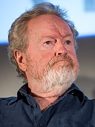
紹介
主にアメリカで活動している。映画監督のトニー・スコットは弟、 同じく映画監督のジョーダン・スコット（英語版）は長女、映像監督のジェイク・スコットは長男、映画監督のルーク・スコット（英語版）は次男。
経歴
BBC時代から映像製作に関するすべての作業に熟達しており、絵コンテの執筆や撮影などを自らの手で行うことも多い。特に作品のイメージをまとめた絵コンテやイメージボードの画力はハイレベルであり、映画愛好家のコレクターズアイテムともなっている。また、撮影に関しては使用するフィルムからレンズ、照明についても熟知しており、そのため、アメリカで映画撮影を行う際には、オペレートなどの点で仕事の範囲を侵犯するため撮影監督と対立し、トラブルを引き起こしたケースも少なくない。 映画界屈指の映像派として知られ、初期の作品では幻想的な映像美が見られるが、美術から照明など細部にわたり構築していく完璧主義がたたり、製作ペースの遅れやスタジオとの対立から数多くのディレクターズカット版が作られるなど辛酸をなめたケースも少なくない。 自他ともに認める几帳面な性格の持ち主。『マッチスティック・メン』公開時のインタビューによると神経質な主人公のキャラクターには自身の性格が投影されているとのこと。 英国の自宅豪邸に日本人女性の高尾慶子（イギリス人に関するエッセイ多数）をハウスキーパーとして雇っていたことがあり、高尾の著書「イギリス人はおかしい」で、スコット家の私生活、性格やその母親とのエピソードを知ることができる。 リドリーは家族に映画のいくつかを捧げている。「ブレードランナー」を弟のフランクに、「ブラックホークダウン」を母親に、「悪の法則」と「エクソダス：神と王」を弟のトニーに捧げている。また、2016年「オデッセイ」がゴールデングローブ賞を受賞したあとも、亡くなったトニーに敬意を表した。 2013年に無神論者であると述べた。 2014年9月におこなわれたBBCのインタビューでも、神を信じているかどうか尋ねられたときに否定している
マイケル・ファスベンダー
デヴィッド（David）(役)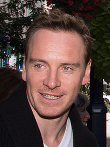
紹介
前作でプロメテウス号に随行していたアンドロイド。
経歴
ドイツ人の父と北アイルランド人の母のもとに、西ドイツ（現在のドイツ）・ハイデルベルクに生まれる。母方の先祖には、アイルランド独立運動のリーダーであったマイケル・コリンズがいるという。2歳の時にアイルランド・ケリー県の町、キラーニーに移り住み、家族はそこでウエスト・エンド・ハウス（West End House）というレストランを営んだ。 カトリック育ちで、堂役をしていた。姉のキャサリン・ファスベンダーは神経心理学者として働いている。特技はピアノ、アコーディオン、ギターの演奏。また、ドイツ語を流暢に喋ることが出来る。ヘヴィメタルの愛好者でもある。
マイケル・ファスベンダー
ウォルター（Walter）(役)紹介
コヴェナント号のクルーに仕える新型アンドロイド。容姿はデヴィッドと同一。知性の面ではデヴィッドよりも単純化されている。
キャサリン・ウォーターストン
ジャネット・ダニエルズ（Janet Daniels）(役)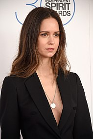
紹介
人類移住計画の責任者でテラフォーミングの専門家。ジェイコブの妻。愛称は「ダニー」。
経歴
出生地はロンドンのウェストミンスターにあるチェルシー・アンド・ウェストミンスター病院だが、これは両親が仕事でロンドンに滞在しているあいだに生まれたためである。出生後はアメリカ合衆国へ戻り、コネチカット州北西部にある小さな町で育った。
父親はアメリカ合衆国の俳優サム・ウォーターストン。母親は1970年代に雑誌『Vogue』のファッションモデルとして活躍したリン・ルイーザ・ウッドラフ（Lynn Louisa Woodruff、現姓ウォーターストン、生年不明 - ）。両親ともに背が高く、ウォーターストン本人も高校時代にはすでに身長180cmを超えていた。現在も長身の女優として知られるが、身長の記載にはゆらぎがあり、海外では主として5フィート11.5インチ（約182cm、日本などでは180cmとされる。
ビリー・クラダップ
クリス・オラム（Chris Oram）(役)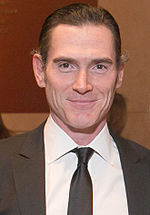
紹介
コヴェナント号の副長。カリンの夫。
経歴
ノースカロライナ大学とニューヨーク大学で学び、1995年にブロードウェイデビュー。2007年にはトニー賞を受賞。
ダニー・マクブライド
テネシー・ファリス（Tennessee Faris）役)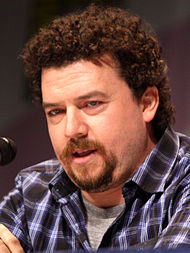
紹介
チーフパイロット。マギーの夫。愛称は「ティー」。
経歴
俳優として知られるマクブライドは、1976年にジョージア州ステイツボロに生まれる。 その後、バージニア州へ移り、フレデリックスバーグで育つ。コミカルな演技で数多くのコメディ映画へ出演。 2006年に出演したコメディ映画『The Foot Fist Way （原題）』あたりから注目されるようになり、コナン・オブライエンのトーク番組へも出演している。 その後はウィル・フェレル、ベン・スティラー、セス・ローゲンなどの人気コメディアン達が出演する映画へ立て続けに出演し、 現在注目される俳優の一人にまでなった。その体格から、体育会系の役柄を演じることが多く、中でもベン・スティラーが監督した『トロピック・サンダー/史上最低の作戦』においては、爆薬マニアの危ない映画スタッフを演じ、 原作者役のニック・ノルティと絶妙なコンビネーションを見せた。
デミアン・ビチル・ナヘラ
ロープ軍曹（Sergeant Lope）(役)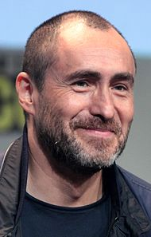
紹介
コヴェナント号の副長。カリンの夫。
経歴
メキシコのコアウイラ州トレオンで[1]レバノン系の家庭に生まれる[3]。 父のアレハンドロ・ビチル（英語版）、母のマリクルーズ・ナヘラ（英語版）、兄のオディセオ（英語版）と弟のブルーノ（英語版）も俳優である。 14歳の時にテレビドラマで俳優としてデビューし、その後、ハリウッド映画にも出演するようになると、2011年の映画『明日を継ぐために』でアカデミー主演男優賞にノミネートされたことで国際的に知られるようになる[3]。 アメリカ合衆国の市民権を得ている[2]。
カルメン・イジョゴ
カリン・オラム（Karin Oram）(役)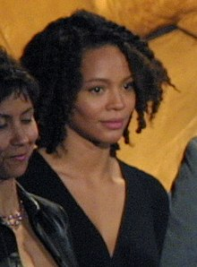
紹介
コヴェナント号の副長。カリンの夫。
経歴
父親はナイジェリア人、母親はスコットランド人。2000年、俳優のジェフリー・ライトと結婚し、子供が二人いる
エイミー・サイメッツ
マギー・ファリス（Maggie Faris）(役)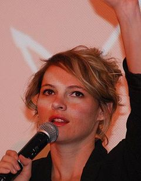
紹介
パイロット。テネシーの妻。
経歴
1981年11月25日、アメリカ合衆国フロリダ州タンパに生まれる。 女優としてAMCのThe Killing、HBOのFamily Tree、Shane CarruthのUpstream Colorなどに出演する
ジャシー・スモレット
リックス（Ricks）(役)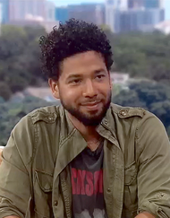
紹介
操縦士。アップワースの夫。
経歴
1982年に米カリフォルニア州サンタローザで[3] 6人きょうだいの3番目の子として生まれる。父ジョエルはロシアおよびポーランド系のユダヤ人、母ジャネット（旧姓ハリス）はネイティブ・アメリカン、アイルランド、クレオールの血を引くアフリカ系アメリカ人で]、市民権活動家である。3人の兄弟と2人の姉妹がいる。妹のジャーニー・スモレット＝ベルは子役出身の女優、弟のジェイク・スモレットも子役出身で、成人後は料理番組を手がけるなど、テレビや料理関連の仕事をしており、他のきょうだいも全て子役などでの役者の経験やテレビタレントの経験がある。 子役としてキャリアを始めるが、1990年代半ばで俳優活動を休止し、歌手として活動する[5]。その後、2012年から俳優としての活動を再開し、2015年からFOXで放送されたドラマ『Empire 成功の代償』で演じたゲイのシンガーソングライター「ジャマル・ライオン（英語版）」役で知られるようになると、コロムビア・レコードと契約してプロ歌手としての活動を本格化する。 2018年には『Empire 成功の代償』シーズン4で演出家としてデビューしている。2019年1月には、米調査会社Qスコア（英語版）による「ポジティブ度」と「親しみ易さ度」の結果をもとに、米The Wrap（英語版）が発表した米4大TV局であるABC、FOX、NBC、CBSのドラマシリーズに出演する人気俳優TOP10の男優部門で9位に選ばれている
ジェームズ・フランコ
ジェイコブ・ブランソン（Jacob Branson）(役)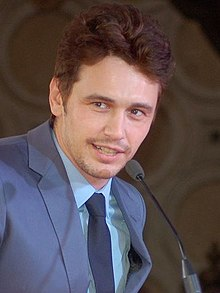
紹介
コヴェナント号の船長。ダニエルズの夫。事故で命を落とす。
経歴
カリフォルニア州パロアルト出身。父親のダグ・フランコはポルトガル及びスウェーデン系、母親のベッツィ（旧姓ヴァーン）はロシア出身のユダヤ系の詩人及び作家。母方の祖母はオハイオ州の美術館のオーナー。弟が2人（トム、デイヴ）いる。 カリフォルニア大学ロサンゼルス校（UCLA）で英文学を学んでいたが、在学中に演技に興味を持ったのをきっかけに大学を中退し、ロサンゼルスに移った。
ガイ・エドワード・ピアース
ピーター・ウェイランド（Peter Wayland）(役)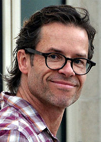
紹介
冒頭のみ登場するウェイランド社の社長。当初は純粋に人類の起源を探るはずだった。
経歴
1967年にイギリスのケンブリッジシャー・イーリーに生まれる。 3歳のときにイギリス空軍のパイロットだった父の仕事上、オーストラリア・ジーロングに移住。 9歳の時に父が飛行機事故により死亡したが、イギリスには戻らなかった。10代より劇団に所属し、いくつかの舞台に立った。またボディビルに打ち込み、 16歳で大会に出場し優勝している。
ノオミ・ラパス
エリザベス・ショウ（Elizabeth Shaw）(役)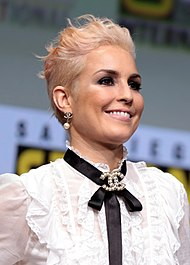
紹介
前作の主人公。エンジニアが人類を滅ぼそうとした理由を探るべく、デヴィッドと共にエンジニアの母星へと向かった。
経歴
イェヴレボリ県フーディクスヴァル出身。父親はスペイン人（バダホス出身のフラメンコシンガー ロジェリオ・ドゥラン、母親は女優ニナ（出生名クリスティーナ）・ノーラン。フォトグラファーの妹が一人いる。幼少期はストックホルム県や南アイスランド地方で過ごす。父親はロマ文化に興味を持ち、定かではないがロマのルーツからかもしれないとラパスが語った。2006年に亡くなり、生前会うことが少なかったという。 実母、妹、継父と5歳から南アイスランドのフルジールで過ごし、15歳の時家を出てストックホルム・シアター・スクールに通う。母国語のスウェーデン語、英語に加え、アイスランド語、ノルウェー語、デンマーク語を話す。 7歳の時、アイスランド映画『I skugga hrafnsins 影のカラスの意』にセリフの無い小さい役で出演。これが演技への情熱の始まりであった。1996年にテレビシリーズ『Tre kronor』でデビュー。2007年公開の『Daisy Diamond』で注目を集める。2009年公開の『ミレニアム ドラゴン・タトゥーの女』ではヒロインのリスベット・サランデルを演じ、世界的に注目を集める女優の一人となる。2010年フランスのサイコスリラー・ラヴ犯罪の英語リメイクでレイチェル・マクアダムズと共演。2011年公開の『シャーロック・ホームズ シャドウ ゲーム』でハリウッド作品に初出演する。リドリー・スコット監督のSF映画『エイリアン』の前日譚の『プロメテウス』の主役に抜擢され、2012年に公開された。2013年ミレニアムの一作目を作った監督のハリウッドデビュー作、『デッドマン・ダウン』に出演。 シリアス・サスペンス系、アクション物を多くこなす。 2020年9月より順次公開のThe Secrets We Keeps では、同郷の俳優ヨエル・キナマンと主演する。
ローガン・マーシャル＝グリーン
チャーリー・ホロウェイ (Charlie Holloway)(役)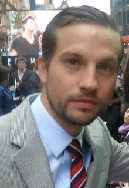
紹介
エリザベスの恋人。